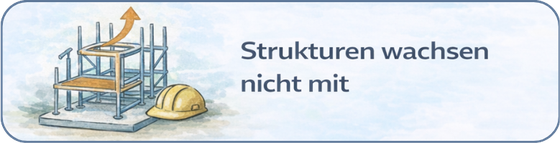
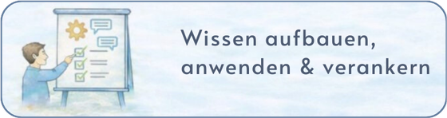

Der KASTEN steht für Ordnung, Klarheit und Verlässlichkeit. Für Systeme, in denen Prozesse, Rollen und Verantwortung ihren festen Platz haben – nicht im Kopf einzelner, sondern sichtbar, verständlich und nutzbar für alle.


In vielen produzierenden Betrieben steckt das entscheidende Wissen über Abläufe, Zuständigkeiten und Entscheidungslogiken im Kopf einzelner Schlüsselpersonen. Das macht Unternehmen abhängig, langsam und anfällig.
Wir schaffen Strukturen, die Prozesse, Rollen und Verantwortung sichtbar machen – damit Ihr gesamtes Team davon profitiert. Nicht als PowerPoint-Konzept, sondern als gelebte Ordnung im täglichen Betrieb.
Wenn Ihnen eines dieser Probleme bekannt vorkommt, sind Sie hier richtig. Wir helfen kleinen und mittelständischen Produktionsbetrieben, genau diese Herausforderungen dauerhaft zu lösen.


Was uns von anderen Beratungsunternehmen unterscheidet: Wir bringen drei unterschiedliche Blickwinkel auf Ihr Unternehmen – gleichzeitig und aufeinander abgestimmt.
Das Ergebnis: Keine einseitigen Empfehlungen, sondern Lösungen, die im Alltag funktionieren – für Führung, Mitarbeitende und Zahlen gleichermaßen.
Das Team kennenlernen →
Als BAFA-gelistete Berater unterstützen wir kleine und mittelständische Unternehmen dabei, staatliche Förderprogramme optimal zu nutzen. Wir begleiten Sie von der Prüfung der Förderfähigkeit bis zur Abrechnung – damit Sie sich auf das Wesentliche konzentrieren können.
Für wen? Betriebe mit bis zu 499 Mitarbeitern und weniger als 100 Mio. € Jahresumsatz können in der Regel gefördert werden.
Mehr zur BAFA-Förderung →
Ein erstes Gespräch kostet nichts – aber Nichtstun kostet Zeit, Geld und Nerven.
Jetzt unverbindlich Kontakt aufnehmen